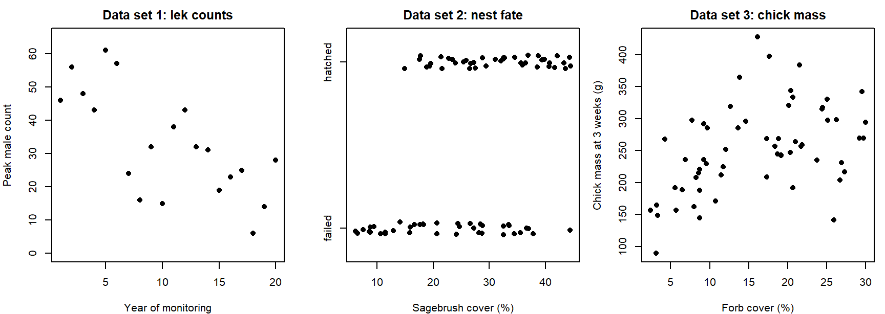
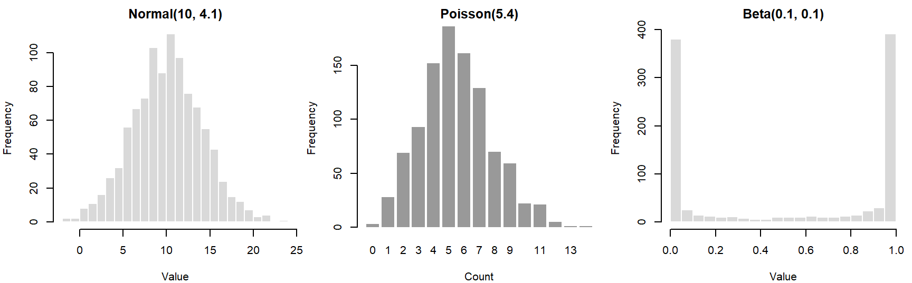
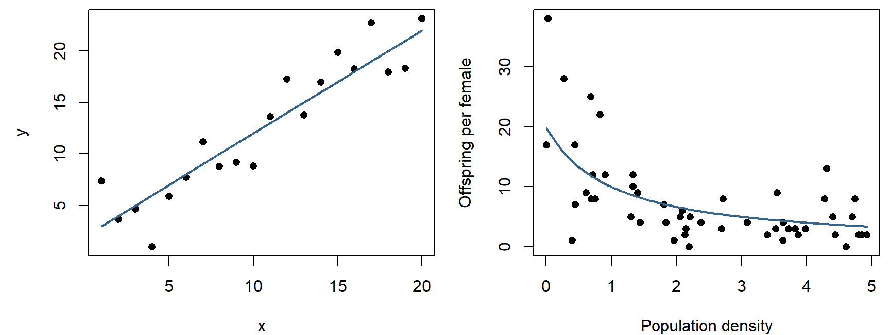
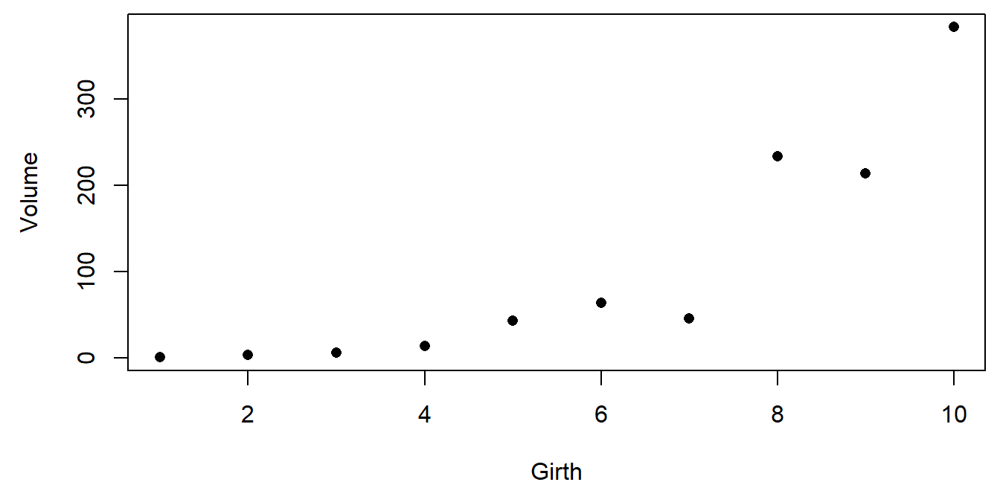
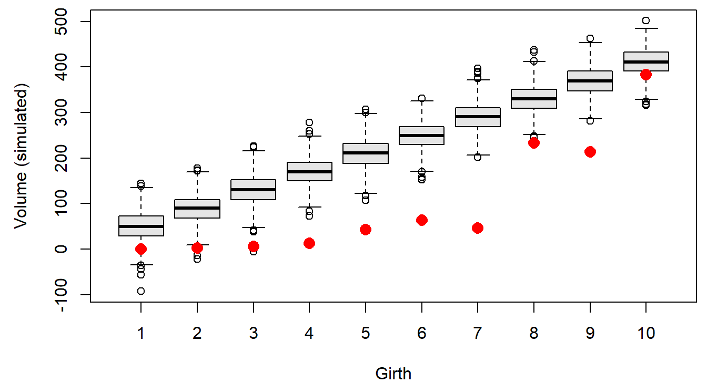
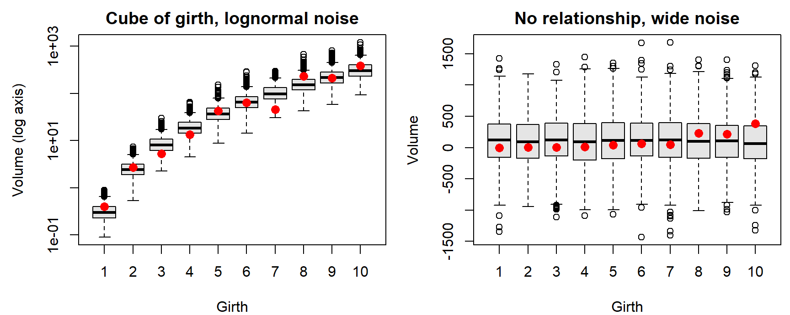
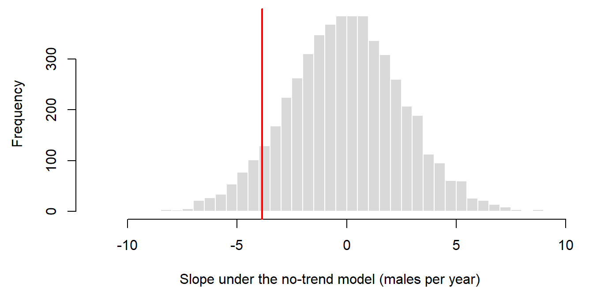
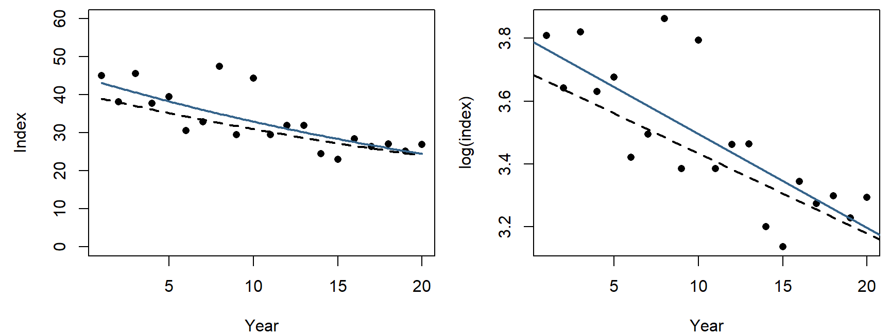

Week 5: Simulating Data from a Model
NRES 746
Sept. 21-23, 2026
R code from this page is also in the companion script. No packages beyond base R are needed.
This material follows Bolker, Ecological Models and Data in R, sections 5.1-5.2 (stochastic simulation, pp. 197-208) and 4.5.2.6 (the lognormal distribution, pp. 178-180).
Simulating data from a model
A data-generating model is a recipe precise enough for a computer to follow: a deterministic function for the expected value of the response, plus a probability distribution for the noise around it. This part builds such models from the functions and distributions of earlier weeks, simulates data from them, and uses many simulated data sets to ask whether a model could have produced the data we have.
1. Big picture

Each candidate explanation (THEORIES) becomes a data-generating model (MODELS). Simulation runs a model forward: choose the parameters, then generate data. Fitting runs it backward, from data to parameters (Bolker p. 198). Forward runs are useful long before any fitting:
- Assumptions become explicit. To make a computer simulate your hypothesis, you have to decide every detail it leaves vague.
- Fitting methods can be tested. Data simulated from known parameters show whether a method recovers them, how precisely, and whether its confidence intervals are honest. Real data never offer a known answer to check against.
- Designs can be compared before fieldwork. Simulating under a proposed design shows how often it would detect an effect of a given size (power analysis).
- Models can be checked against data. If a model rarely produces data that look like ours, it is a poor description of how ours arose.
- Null hypotheses can be simulated. A null hypothesis is itself a data-generating model, so the distribution of any test statistic under the null can be simulated instead of looked up.
Bayesian analysis uses the same idea later in the semester (prior and posterior predictive checks).
2. WOD: choosing a data-generating model
The WOD (a short warm-up exercise at the start of class) showed three simulated sage-grouse data sets and asked for a model for each: a deterministic function for the expected value of the response, and a probability distribution for the noise.

Data set 1 makes a good example. The counts fall by roughly the same percentage each year, so the expected count is an exponential decline, \(\mu_t = a e^{-bt}\). Counts are whole numbers that can't go below zero, and their scatter is wider than a Poisson distribution allows, so a negative binomial describes the noise:
\[Y_t \sim \text{NegBin}(\mu_t, k), \qquad \mu_t = a e^{-bt}.\]
This is how the WOD's lek counts were made, with \(a = 55\), \(b = 0.06\), and \(k = 8\):
set.seed(746)
yr <- 0:19
mu_lek <- 55 * exp(-0.06 * yr) # deterministic: expected count
lek <- rnbinom(20, mu = mu_lek, size = 8) # stochastic: noise around it
lek## [1] 46 56 48 43 61 57 24 16 32 15 38 43 32 31 19 23 25 6 14 28Question: For data sets 2 and 3, which function would you use for the expected value, and which distribution for the noise? What feature of each data set rules out a normal distribution?
3. Random number generators
Every probability distribution doubles as a random number generator. In R, the generator's name starts with r; its first argument is the number of draws, followed by the distribution's parameters. (The matching d, p, and q functions give the probability or density, the cumulative probability, and the quantiles.)
set.seed(3)
rnorm(5, mean = 10, sd = 4.1)## [1] 6.056073 8.800645 11.061032 5.276259 10.802710rpois(5, lambda = 5.4)## [1] 5 5 5 6 8round(rbeta(5, shape1 = 0.1, shape2 = 0.1), 3)## [1] 0 1 1 1 0par(mfrow = c(1, 3), mar = c(4, 4, 2, 0.5))
hist(rnorm(1000, 10, 4.1), breaks = 30, col = "grey85", border = "white",
main = "Normal(10, 4.1)", xlab = "Value")
barplot(table(rpois(1000, 5.4)), col = "grey60", border = NA,
main = "Poisson(5.4)", xlab = "Count", ylab = "Frequency")
hist(rbeta(1000, 0.1, 0.1), breaks = 30, col = "grey85", border = "white",
main = "Beta(0.1, 0.1)", xlab = "Value")
par(mfrow = c(1, 1))A histogram of many draws approaches the shape of the distribution. The Beta(0.1, 0.1) piles its draws up near 0 and 1, the opposite of what its symmetric mean of 0.5 might suggest.
4. Signal and noise
Most data-generating models have two parts (Bolker section 5.2.1): a deterministic function that maps the predictors to an expected value (the signal), and a stochastic distribution for how observations scatter around it (the noise).
The simplest case is linear regression. A straight line gives the expected value, and normal noise surrounds it:
\[\mu_i = a + b x_i, \qquad Y_i \sim \text{Normal}(\mu_i, \sigma).\]
x_lin <- 1:20
a <- 2
b <- 1
y_det <- a + b * x_lin # deterministic part
set.seed(1001)
y_lin <- rnorm(20, mean = y_det, sd = 2) # stochastic partFor the normal only, this is the same as adding noise to the line, \(y_i = a + b x_i + \varepsilon_i\) with \(\varepsilon_i \sim \text{Normal}(0, \sigma)\). That additive form doesn't carry over to other distributions. Bolker's second example is fecundity falling with population density, a hyperbolic function with negative binomial noise:
\[\mu_i = \frac{ab}{b + x_i}, \qquad Y_i \sim \text{NegBin}(\mu_i, k).\]
a <- 20
b <- 1
k <- 5
set.seed(1001)
x_hyp <- runif(50, min = 0, max = 5) # densities sampled from the field
mu_hyp <- a * b / (b + x_hyp)
y_hyp <- rnbinom(50, mu = mu_hyp, size = k)par(mfrow = c(1, 2), mar = c(4, 4.5, 0.5, 0.5))
plot(x_lin, y_lin, pch = 16, xlab = "x", ylab = "y")
lines(x_lin, y_det, lwd = 2, col = "steelblue4")
plot(x_hyp, y_hyp, pch = 16, xlab = "Population density", ylab = "Offspring per female")
curve(a * b / (b + x), add = TRUE, lwd = 2, col = "steelblue4")
par(mfrow = c(1, 1))Here the deterministic function sets the mean of the noise distribution. The negative binomial's variance is \(\mu + \mu^2/k\), so the scatter shrinks as the expected fecundity falls: points spread widely at low density and crowd together at high density. Nothing was added to the curve; the spread is a property of the distribution chosen.
The widget pairs any of five functions with any of six noise distributions. Each distribution's mean is set to the function's value at each \(x\) (for the gamma, by setting scale = mean / shape; for the lognormal, by adjusting its log-scale mean). The cards compare the scatter around the curve at low and high \(x\).
Question: Choose "Exponential decline" and compare Normal, Poisson, and Lognormal noise using the two spread cards. Which keeps the scatter the same everywhere, and which let it shrink as the mean shrinks? Then choose "Linear," drag \(b\) below about \(-1\), and choose Poisson. Why do some points disappear?
5. Many replicates: could this model have produced our data?
One simulated data set is one random outcome. Simulating many data sets from the same model shows the full range of outcomes the model considers plausible, and real data can be compared with that range.
Take ten trees with measured girth and timber volume (illustrative numbers):
tree_data <- data.frame(girth = 1:10,
volume = c(0.4, 2.7, 5.3, 13.3, 42.4,
63.5, 45.8, 233.4, 213.7, 383.1))
par(mar = c(4, 4.5, 0.5, 0.5))
plot(volume ~ girth, data = tree_data, pch = 16, xlab = "Girth", ylab = "Volume")
Propose a fully specified model, \(\text{Volume}_i \sim \text{Normal}(10 + 40\,\text{Girth}_i,\ 31)\), simulate 1,000 data sets of ten trees from it, and compare:
set.seed(31)
n_sim <- 1000
sim_vol <- replicate(n_sim, rnorm(10, mean = 10 + 40 * tree_data$girth, sd = 31))
par(mar = c(4, 4.5, 0.5, 0.5))
boxplot(t(sim_vol), names = tree_data$girth, col = "grey90",
xlab = "Girth", ylab = "Volume (simulated)")
points(1:10, tree_data$volume, pch = 16, col = "red", cex = 1.5)
Each box shows the middle half of the simulated volumes at one girth, and the whiskers most of the rest. Every real tree is smaller than the model expects, most of them far below its whiskers, and the misses are largest at middle girths. The data curve upward and the line doesn't, so this model is a poor description of how these trees arose.
Two alternatives. If trees keep roughly the same shape as they grow, volume scales with girth cubed, and the scatter should grow with tree size, so lognormal noise fits the biology: \(\log(\text{Volume}_i) \sim \text{Normal}(\log 0.3 + 3 \log \text{Girth}_i,\ 0.4)\). And for contrast, a model with no relationship to girth and very wide noise, \(\text{Volume}_i \sim \text{Normal}(100, 400)\):
sim_cube <- replicate(n_sim, exp(rnorm(10, log(0.3) + 3 * log(tree_data$girth), 0.4)))
sim_null <- replicate(n_sim, rnorm(10, mean = 100, sd = 400))
par(mfrow = c(1, 2), mar = c(4, 4.5, 2, 0.5))
boxplot(t(sim_cube), names = tree_data$girth, col = "grey90", log = "y",
xlab = "Girth", ylab = "Volume (log axis)", main = "Cube of girth, lognormal noise")
points(1:10, tree_data$volume, pch = 16, col = "red", cex = 1.3)
boxplot(t(sim_null), names = tree_data$girth, col = "grey90",
xlab = "Girth", ylab = "Volume", main = "No relationship, wide noise")
points(1:10, tree_data$volume, pch = 16, col = "red", cex = 1.3)
par(mfrow = c(1, 1))The geometric model's simulated data look like the real trees at every girth, with one tree (girth 7) at the low edge. This check can't prove the model right, but the model survives a test it could have failed.
Question: Every red point also falls inside the boxes of the no-relationship model. Does that make it as good a model of these trees as the geometric one? What would a sharper comparison need to account for?
6. A null hypothesis is a data-generating model
A test asks how often a model with no effect would produce a pattern as strong as the one observed. That model can be simulated directly.
Suppose the lek in section 2 had only been counted for its first eight years:
t8 <- yr[1:8]
y8 <- lek[1:8]
slope_obs <- unname(coef(lm(y8 ~ t8))[2]) # males per year
slope_obs## [1] -3.869048The counts dropped by about 3.87 males per year. Could a lek with no trend produce a slope that steep by chance? The null model keeps the expected count constant at the eight-year average and uses the same negative binomial noise (\(k = 8\)) as the data:
set.seed(5)
null_slopes <- replicate(5000, {
y_null <- rnbinom(8, mu = mean(y8), size = 8)
coef(lm(y_null ~ t8))[2]
})
p_8 <- mean(null_slopes <= slope_obs) # fraction at least as steep
p_8## [1] 0.071par(mar = c(4, 4.5, 0.5, 0.5))
hist(null_slopes, breaks = 50, col = "grey85", border = "white", main = "",
xlab = "Slope under the no-trend model (males per year)")
abline(v = slope_obs, col = "red", lwd = 2)
About 7% of no-trend leks produced a slope at least as steep, so eight years of counts don't rule out the no-trend model. With ten years, the same simulation gives 0.011. The model that generated these data does have a decline; with eight years, the monitoring just couldn't separate it from noise reliably. How often a design detects a real effect is its power (see error rates and power below).
Discussion
- With eight years of lek counts, a no-trend lek produces a slope as steep as the observed one in about 7% of simulations; with ten years, about 1%. A manager asks whether the lek "started declining in year 8." What would you tell them?
- The no-trend model used the same negative binomial noise (\(k = 8\)) that generated the data. In a real analysis, \(k\) would be unknown. If you assumed less scatter than the real counts have, how would the \(p\)-value change?
- Think of a data set from your own work. Which part of its data-generating model are you least sure about: the expected-value function or the noise distribution? How could a simulation help you decide?
Bonus: process noise and observation noise
Every model above is static: each observation's noise is drawn independently. Population counts over time can have two quite different kinds of noise (Bolker returns to this in Chapter 11):
- Observation noise affects only the count. Weather, observers, and effort push one year's count up or down, but the population itself follows the trend: \(I_t = N_0 \lambda^t e^{\varepsilon_t}\).
- Process noise affects the population. A good or bad year changes how many animals there are, and that change carries into every later year: \(N_t = N_{t-1} \lambda e^{\varepsilon_t}\).
Both runs in the widget use the same random draws \(\varepsilon_t\) and the same expected decline (dashed). Only where the noise enters differs.
Question: With \(\sigma = 0.15\), compare the year-30 spread in the two panels. A straight line fit to one process-noise run treats its 30 points as independent scatter around a line. Why might its confidence interval for the slope be too narrow?
With a single time series the two kinds of noise are hard to tell apart, since both look like scatter around a trend; separating them usually takes replicate counts or a model that includes both (Dennis et al. 2006, Ecological Monographs 76: 323-341).
Trends on the log scale
These topics opened the lab on data-generating models. A count index that declines by a constant percentage each year, with proportional noise, is lognormal around an exponential curve. Taking logs turns it into a straight line with constant scatter, which ordinary regression can fit, and simulation then shows whether that regression's confidence intervals do what they claim.
The running example is a sage-grouse lek index that starts at \(I_0 = 40\) and falls 40% over 20 years.
1. The lognormal distribution
A variable \(X\) is lognormal if \(\log X\) is normal, \(\log X \sim \text{Normal}(m, s)\) (Bolker pp. 178-180). It arises when many independent factors multiply together, just as the normal arises when they add: a population whose growth rate varies randomly from year to year ends up with a size that is the product of many random factors.
- Median and mean. The median is \(e^m\), but the mean is \(e^{m + s^2/2}\), a little larger. A few large values pull the mean above the middle of a right-skewed distribution.
- Spread proportional to the mean. The standard deviation is \(\sqrt{e^{s^2} - 1}\) times the mean, so the coefficient of variation is the same at every mean. As a population declines, lognormal scatter shrinks along with it.
s <- 0.15
median_I <- c(40, 24) # year 0 and year 20
mean_I <- median_I * exp(s^2 / 2)
sd_I <- mean_I * sqrt(exp(s^2) - 1)
data.frame(year = c(0, 20), median = median_I,
mean = round(mean_I, 2), sd = round(sd_I, 2))## year median mean sd
## 1 0 40 40.45 6.10
## 2 20 24 24.27 3.66The SD falls from 6.10 to 3.66 as the median falls from 40 to 24, and the ratio of SD to mean stays at 0.151.
2. Fitting an exponential trend with a straight line
An index that keeps the same fraction \(\lambda\) of its value each year, with lognormal noise, follows
\[I_t = I_0 \lambda^t e^{\varepsilon_t}, \qquad \varepsilon_t \sim \text{Normal}(0, \sigma).\]
Taking logs gives a straight line in \(t\) with additive, constant normal scatter, exactly what lm() assumes:
\[\log I_t = \log I_0 + bt + \varepsilon_t, \qquad b = \log \lambda.\]
A 40% decline over 20 years means \(\lambda^{20} = 0.6\), so \(\lambda = 0.6^{1/20} = 0.9748\) and \(b = -0.0255\). One simulated program of 20 annual surveys, with \(\sigma = 0.15\):
I0 <- 40
sigma <- 0.15
b_true <- log(0.6) / 20
t_yr <- 1:20
set.seed(2201)
idx <- I0 * exp(b_true * t_yr + rnorm(20, 0, sigma))
fit_idx <- lm(log(idx) ~ t_yr)
coef(fit_idx)## (Intercept) t_yr
## 3.7942881 -0.0298543b_hat <- unname(coef(fit_idx)["t_yr"])
par(mfrow = c(1, 2), mar = c(4, 4.5, 0.5, 0.5))
plot(t_yr, idx, pch = 16, ylim = c(0, 60), xlab = "Year", ylab = "Index")
curve(I0 * exp(b_true * x), add = TRUE, lty = 2, lwd = 2)
curve(exp(coef(fit_idx)[1] + b_hat * x), add = TRUE, lwd = 2, col = "steelblue4")
plot(t_yr, log(idx), pch = 16, xlab = "Year", ylab = "log(index)")
abline(log(I0), b_true, lty = 2, lwd = 2)
abline(fit_idx, lwd = 2, col = "steelblue4")
par(mfrow = c(1, 1))The dashed curve is the truth and the blue one the fit. On the raw scale (left) the scatter shrinks as the index falls; on the log scale (right) it is the same width everywhere.
The slope is on the log scale. To report it in ecological terms, transform back: \(\hat\lambda = e^{\hat b} = 0.9706\) is the fraction kept each year, and \(1 - e^{20 \hat b} = 0.45\) is the estimated decline over 20 years (the truth is 0.40). The back-transformed curve estimates the median index, not the mean, for the reason in section 1.
3. What a confidence interval promises
confint() gives a 90% interval for the slope from this one program:
confint(fit_idx, "t_yr", level = 0.90)## 5 % 95 %
## t_yr -0.03952884 -0.02017975This interval happens to contain the true slope, -0.0255. The "90%" isn't a probability about this particular interval: the true slope is a fixed number, inside the interval or not. It describes the procedure: across many programs simulated from the same model, about 90% of the intervals computed this way should contain the truth. That claim, called coverage, can be checked only by simulation, because only a simulation has a known truth.
The widget simulates monitoring programs from the model above and tallies how many intervals contain the true slope.
Question: Simulate 100 programs a few times with observation noise. How close to 90% does the coverage come, and how much does it change from one batch of 100 to the next? Then switch to process noise (see the bonus above). What happens, and why?
4. Error rates and power
A rule that declares "decline" or "no decline" can be wrong in two ways:
- Type I error (false alarm): declaring a decline when there is none. The lek simulation in section 6 estimated how often a no-trend lek would look as steep as ours.
- Type II error (missed detection): declaring no decline when there is one.
Power is \(1 -\) the type II error rate: the probability that a design detects an effect of a given size. Like coverage, it is a property of a design and an analysis, not of a data set, and it is estimated the same way: simulate many data sets from a model with the effect built in, analyze each one as you would the real data, and count the detections. When the question has a direction ("is it declining?"), a detection should require both a small \(p\)-value and an estimate in the right direction. The power analysis section of the Week 6 page builds this for a monitoring program, one tested function at a time.
Writing a likelihood
This class meeting was a group exercise in place of a lecture: writing the likelihood for four sage-grouse nests, starting from one nest, then on the log scale, and finally as an R function. The exercise and its discussion are in the likelihood section of the Week 6 page, which picks up from it.